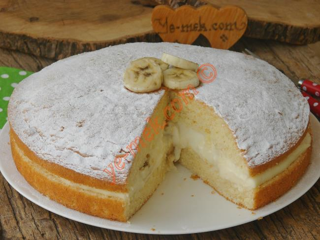

Pratik Alman Pastası

Yumuşacık bir pandispanya düşünün, arasında da son derece lezzetli bir krema. Alman pastası hem
lezzetiyle hem de kolaylığı ile favoriniz olacak. Sizler de gün sofralarınıza ya da her misafirinize farklı
şeyler yapmayı sevip, farklı tarifler arayanlardansanız Alman pastası tarifi tam size göre.Yapımı kolay olan
Alman pastası büyük küçük herkesin beğenisini kazanacak. Tarif defterinizde mutlaka bulunması gereken
Alman pastanızı ev de kendiniz çok rahat yapabilirsiniz.
Pratik Alman Pastası Tarifi İçin Malzemeler
Keki İçin:
- 2 adet yumurta
- 1,5 çay bardağı şeker
- 1 çay bardağı süt
- 3 çay bardağı un
- 1 çay bardağı sıvı yağ
- 1 paket kabartma tozu
Kreması İçin:
- 500 ml süt
- 3 yemek kaşığı un
- 1 çay bardağı şeker
- 1 adet yumurta
- 1 yemek kaşığı tereyağı
- 1 paket vanilya
Hazırlanış
- İlk olarak keki hazırlamalıyız. Bu nedenle derince bir kapta 2 adet yumurta ile 1,5 çay bardağı şekeri beyazlaşana kadar çırpın.
- Daha sonra kalan malzemeleri yani süt, un, sıvı yağ, kabartma tozunu ekleyerek kekin hamurunu oluşturun.
- Hamuru yağlamış olduğunuz tepsiye ya da kalıba dökün.
- Keki 160 derecede önceden ısıtılmış fırında üzeri pembeleşinceye kadar yaklaşık 20-25 dakika pişirin.
- Kek piştikten sonra fırından çıkararak soğumaya bırakın ve bu arada kremasını hazırlayın.
- Krema için tereyağ ve vanilya hariç yukarıda belirtilen malzemeleri bir tencereye ekleyerek koyulaşana kadar karıştırarak pişirin.
- Koyulaştıktan sonra tereyağ ve vanilyasını ekleyerek karıştırıp ocaktan alıyoruz.
- Krema hazır olduğunda kekinizi ortadan ikiye bölün.
- Keklerin arasına tüm kremayı dökün ve eşit olarak yayın.
- Kekin üst kısmını kapatın ve en üstüne pudra şekeri serpin.
- Soğuduktan sonra servis yapabilirsiniz. Afiyet olsun..
Afiyet Olsun.